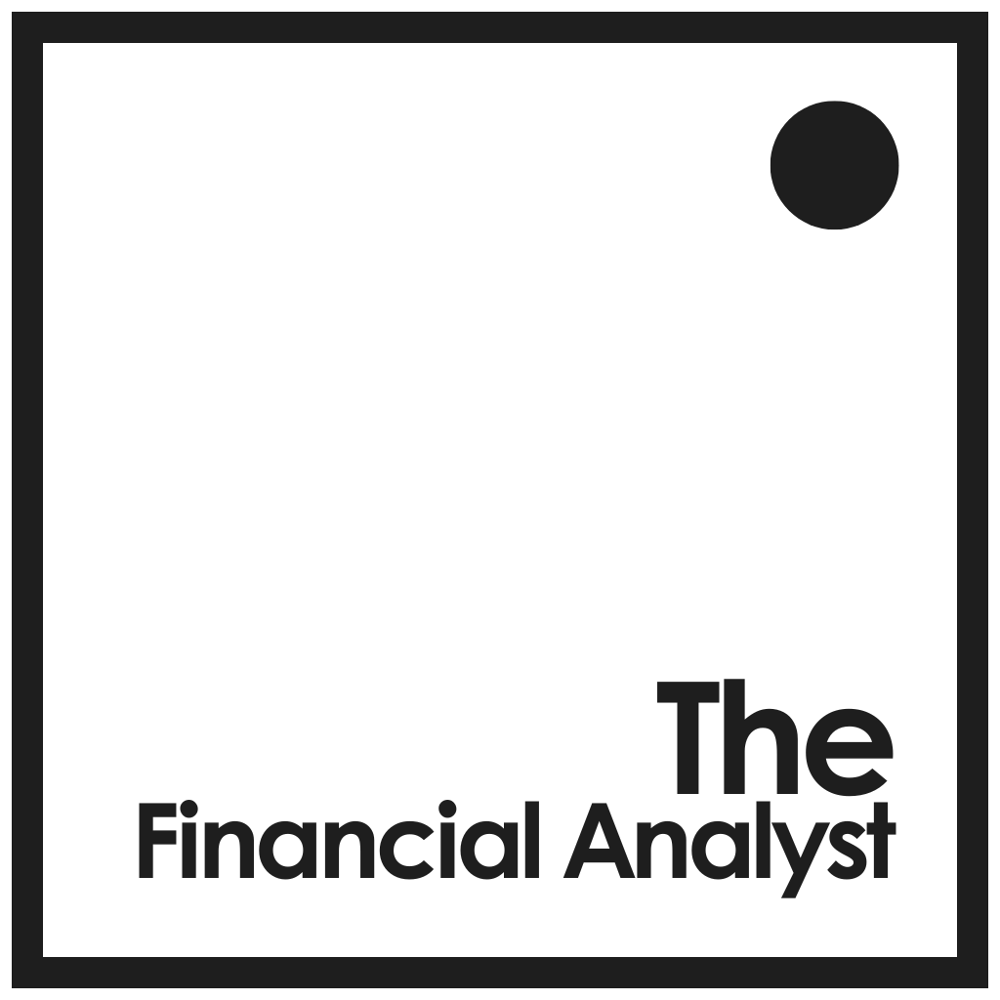

Agentic analysis built to remove friction from the decisions that matter most to a CFO: credit exposure, capital allocation, and portfolio performance.
Corporate finance teams face a structural tension: the decisions that matter most (credit exposure, capital allocation, portfolio performance) demand analysis that's both fast and rigorous. Automating the existing 5-day process would still take days. The Financial Analyst replaces the process itself, delivering the same decision-ready analysis in 2 hours.
This page is a working demonstration: an agent, not a chatbot or a dashboard, built for decision-making in corporate finance. Given a goal such as a credit review or an investment screen, it plans and executes the full analysis itself, rather than waiting for the next prompt or reporting on work already done.
The binding constraint is the friction that sits between asking the right questions
and finding relevant answers.
Data access usually isn't the constraint: most of what a CFO needs is already public, in filings and market feeds. The Financial Analyst concentrates and systematises the analysis the CFO's judgment relies on, producing decision briefs across three domains from a single, consistent workflow. It doesn't replace that judgment.
Three CFO Domains
The Problem
A CFO authorising credit exposure (to a counterparty, a borrower, or a joint venture partner) needs a structured view of debt serviceability, covenant headroom, liquidity under stress, and the conditions that could accelerate or contain default. A financial summary alone doesn't give them that, and that analysis is time-consuming to produce consistently: quality varies depending on who runs it and when.
What It Produces
A structured credit brief with an executive summary built around four blocks (credit profile, key risks, structural protections, and recommendation), followed by a full assessment covering capital structure, debt capacity, stress scenarios, and qualitative probability of default. Appendices hold the technical data; the brief is executive-ready.
The Standard It Applies
Credit analysis grounded in public financials, live market data, and a stress framework designed to surface the conditions under which the exposure becomes a problem, not the base case.
The Problem
Before a finance team commits weeks of bandwidth to due diligence, a prior question needs answering: is this target worth the cost of looking closely? That screening judgment (is this a good business, at what price, with what structural risks) is often made informally, inconsistently, or not at all. The result is either wasted due diligence capacity or missed opportunities that never made it to the table.
What It Produces
A structured investment brief covering business quality, competitive position, financial performance, and valuation against sector benchmarks. It answers the two questions that matter before committing time and resources: is this a good business, and what is the right engagement structure? A pre-diligence screening instrument, not a substitute for one.
The Standard It Applies
Relevant valuation frameworks, live peer multiples, and sector margin and WACC benchmarks, applied rigorously at the screening stage, so the decision to commit due diligence resources reflects valuation reality rather than getting made after the fact.
The Problem
A CFO reviewing a portfolio of business units needs to answer two questions that internal reporting rarely surfaces cleanly: first, which units are creating value above their cost of capital and which are destroying it, and second, what does the external sector benchmark say about whether that is structural or recoverable? Most BU reviews answer the first question with precision and the second not at all, which makes it hard to distinguish units that need fixing from units that should be exited.
What It Produces
A business unit brief combining internal financial performance with external sector benchmarking: margin position, ROIC versus WACC, and peer comparison. The brief tells decision-makers whether each unit is performing in line with its strategic track, with the internal and external analysis sitting in the same document against the same standard.
The Standard It Applies
Sector data for margins, multiples, WACC, and beta: the external reference point that turns an internal performance view into a value creation assessment.
One workflow.
Consistent inputs.
Three analytical outputs.
How it runs
The system is fully agentic and operates end-to-end from a single email command. A run is triggered by sending a one-line instruction to the system's inbox: ticker, domain, and optional scope. Stage 1 fires automatically: it discovers which of the company's investor relations filings may be relevant and sends them for human review before anything is downloaded. After selection of which documents enter the pipeline, Stage 2 then ingests those filings alongside market data and sector benchmarks and passes the full package to a reasoning engine operating under domain-specific instructions. The completed brief is delivered by email as both a formatted document and a styled HTML output, accompanied by a summary of key metrics.
The human checkpoint
The human review step at document selection is deliberate. Investor relations pages vary widely by company; automated selection would occasionally pull the wrong documents into a high-stakes analytical output. Keeping a human in the loop at this step is quality control by design: a considered judgement about where autonomous execution is appropriate and where it isn't.
Why build it this way
Most agentic AI projects fail not on model quality but on the wrong kind of task: MIT research finds that 95% of generative AI investment delivers no measurable return, largely where automation is aimed at the decision itself rather than the well-defined, repeatable work underneath it. This system is built on the opposite premise: three narrow domains and fixed analytical frameworks keep automation inside well-defined, repeatable work, while one deliberate human checkpoint keeps actual decision-making, and the trust to act on it, with the person accountable for it. MIT Sloan researcher Andrew Lo points to building AI systems that are accountable by design as the main unresolved barrier to wider AI adoption in finance: that checkpoint exists for that reason.
The Outputs
Three decision-ready briefs, one per CFO domain. Company references anonymised.
The Financial Analyst was designed, built, and tested by Andreas Cavalca Neumann as a fully operational demonstration that agentic analysis, applied with the right frameworks and the right restraint, earns the trust a CFO needs to act on it.